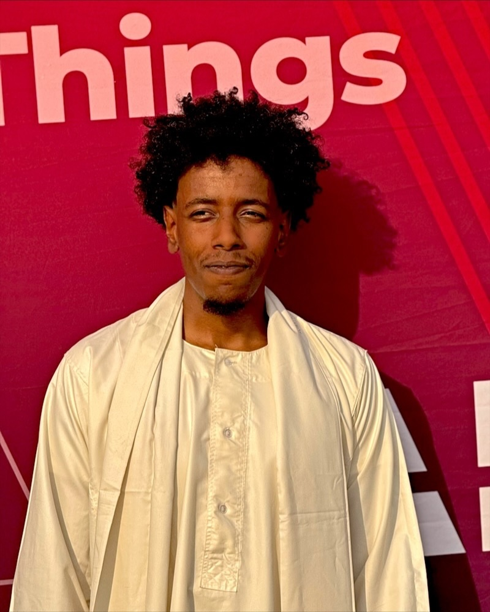
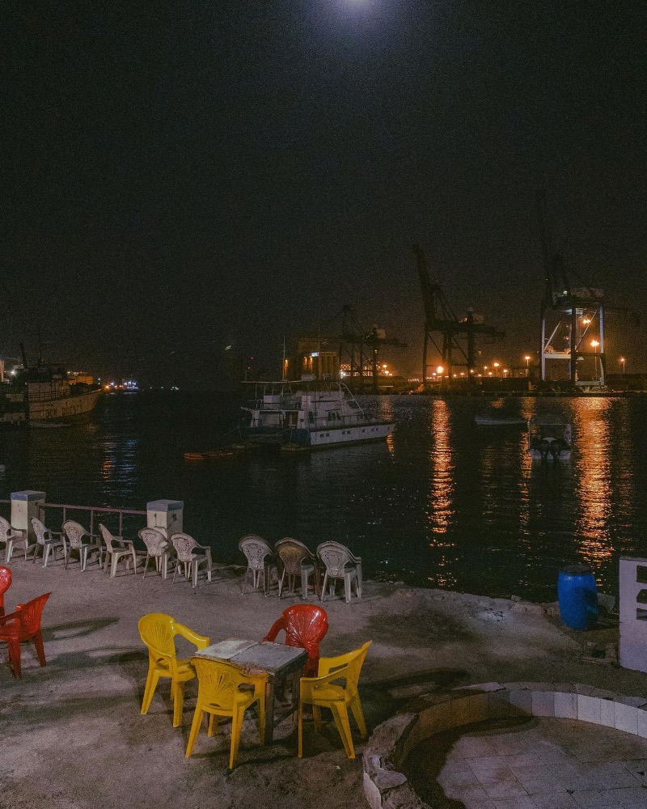
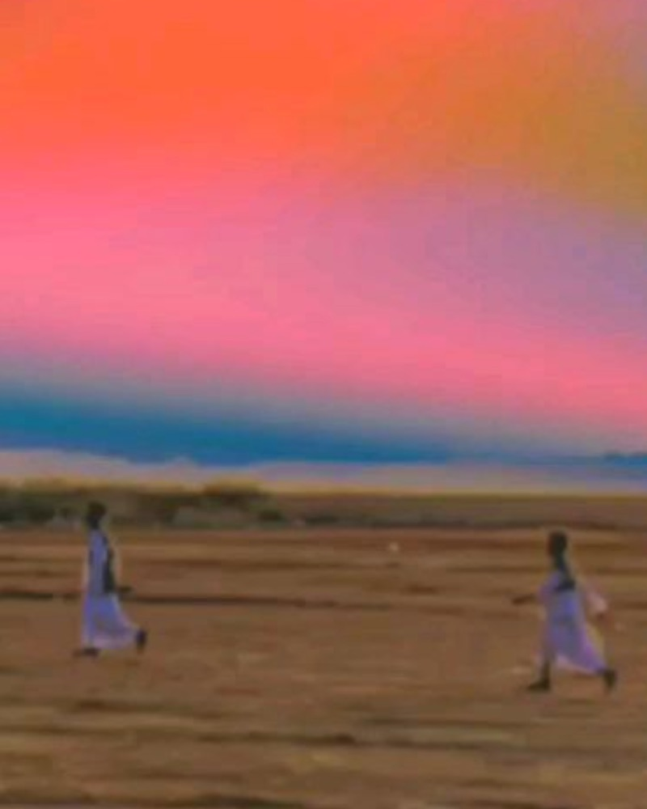
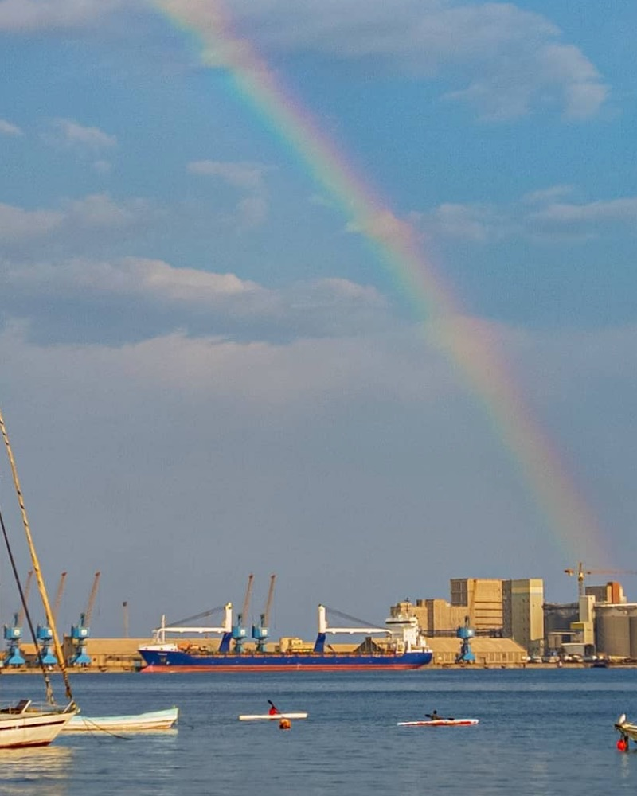
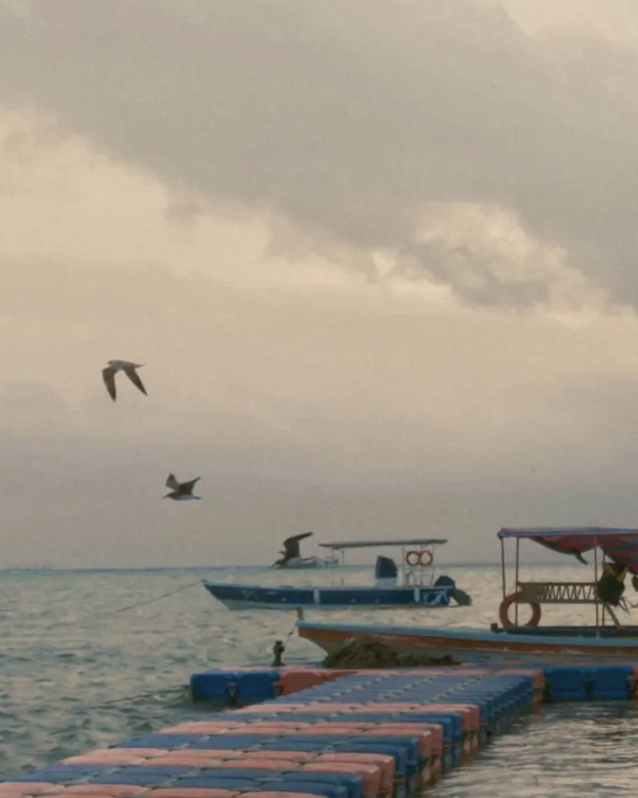
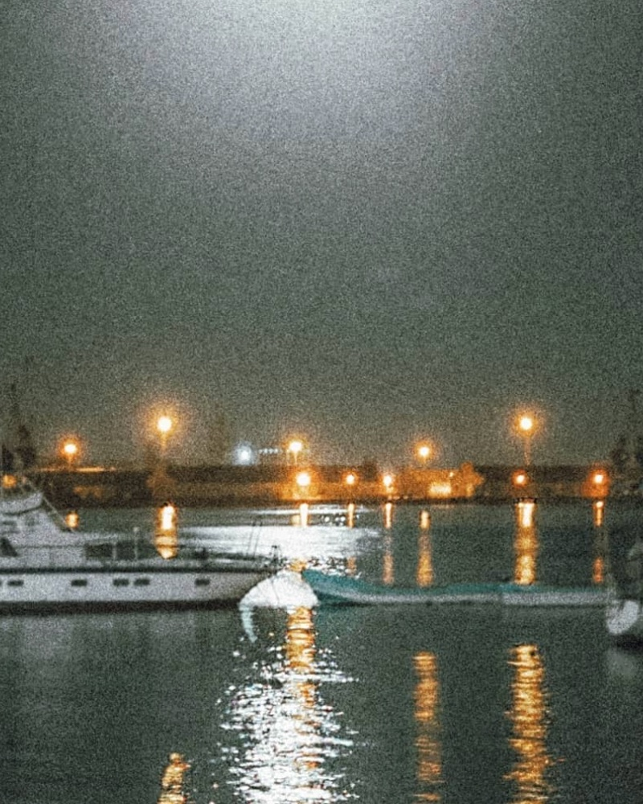
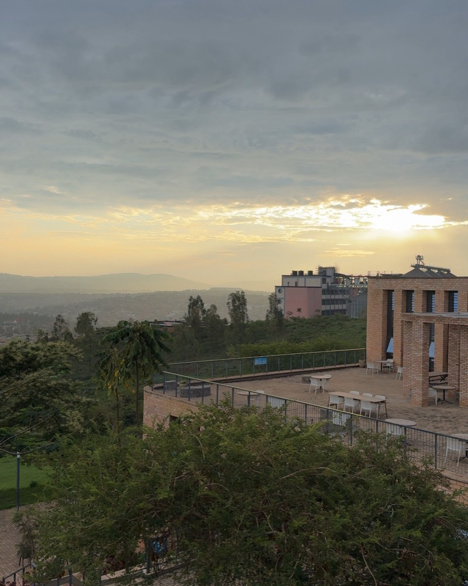
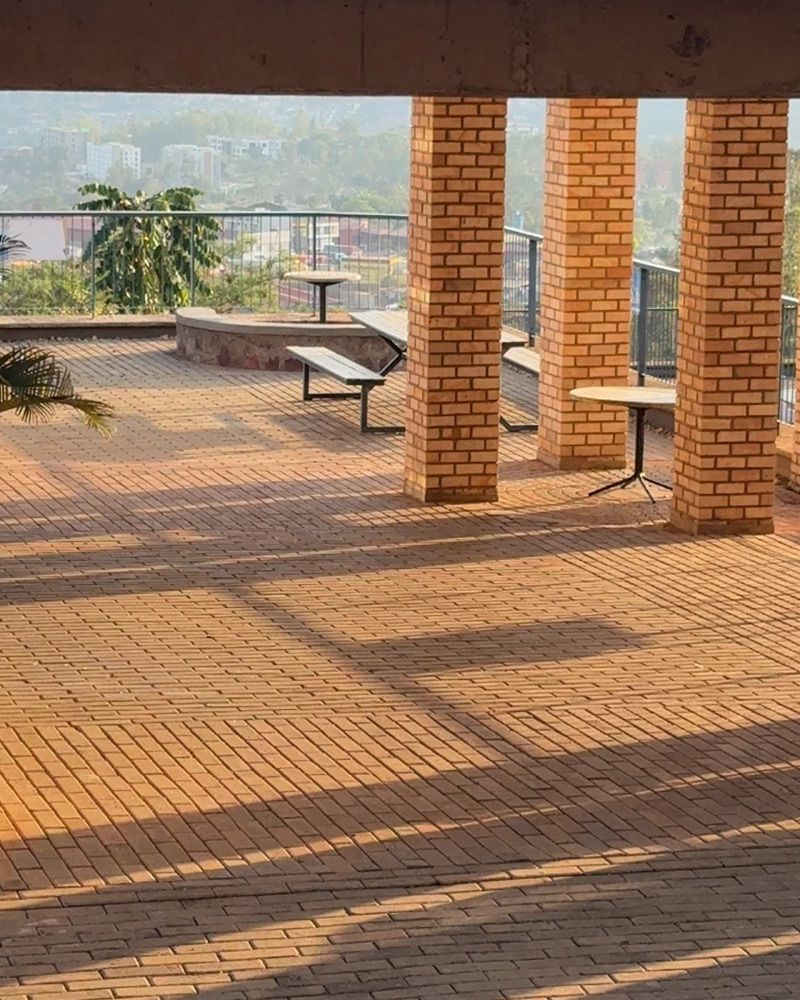
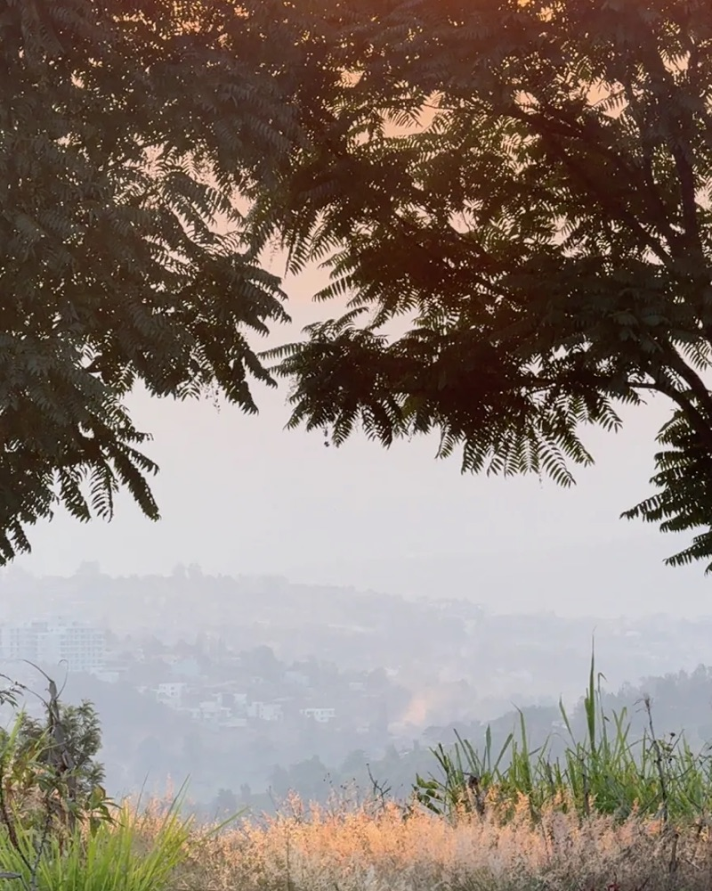

أهلاً، أنا نوّاف
Design. Code. Rhythm.
I'm Nawaf Ahmed, a Sudanese developer and product designer studying software engineering at African Leadership University in Kigali. I build products for African students, schools and communities.

من السودانRooted in Sudan, building for Africa.
I care about both halves of a product: the systems that keep working when the internet doesn't, and the interface people actually touch.
At ALU I learn by building real things for real people: a campus reporting app for my own classmates, an e-learning platform that works offline, and, as an intern at Elevanda Ventures, a school portal for families in Kigali. I like owning the whole journey, from talking to users and sketching flows to designing the interface and writing the code that ships it. I'd rather build something useful than something trendy.
Music is where I come from. My library starts with Mohammed Wardi, Mahmoud Abdelaziz, Mohamed Al-Amin and Nancy Ajaj, and I love hearing that heritage reimagined by the AlMultaqa Chamber Orchestra. From there it jumps straight to Tems, Ayra Starr, amapiano and Central Cee.
With a camera I look for what I look for in an interface: lines, balance and light. I shoot the streets and architecture of Kigali and skies over the sea, and my site Story Cast is a love letter to the sound and landscapes of Sudan.
- Studying
- Software engineering, ALU
- Based in
- Kigali, Rwanda
- On repeat
- Wardi, Wad Al-Amin, Tems
- Matchdays at Amahoro Stadium
- Barça and Messi
- Movies and TV shows
- Tech and economy
Projects
Products I've designed and built, from research to release. More on GitHub.
Care
CampusCare
A mobile app for reporting and tracking maintenance and safety issues at ALU's Kigali campus. Students report with photos (anonymously if they want), say "Me too" on issues that affect them, and follow each report's status. Staff triage a queue, and reports left unresolved for 5 days get flagged.
Design + development · View code →Asala Hub
An offline-first e-learning app for places with weak internet. Educators build courses and grade work, students learn and submit assignments offline, and everything syncs automatically when the connection comes back.
Full stack · Live site →Cast
Story Cast
A media microsite about Sudanese culture, music and landscapes, told through audio, live performances and photography. Every recording comes with a transcript, so anyone can follow it.
Design + front end · View code →Momentum (Himma)
A learning insight platform that turns what you read, watch and study into clear skill paths, with AI insights that show your progress and the gaps in what you know.
Product + full stack · View code →Schools
Elevanda Ventures
A school management system for parents and students in Kigali, with a client portal and an admin portal. Families pay and track school fees and see grades, attendance and timetables. Each device has to be approved by an admin before it can sign in.
Internship · Full stack · View code →Africa
Taste of Africa
A multi-page website celebrating the food of East, North and West Africa, with recipes, culinary regions and the stories behind the dishes.
Design + front end · Live site →بعينيThrough my lens
When I'm not designing or coding, I'm out with a camera: harbours at night, skies over the sea, and the brick, lines and light of Kigali. The same eye for colour and composition goes into my interfaces.

Moon over the harbour Violet dusk 
Running at sunset 
Rainbow over the port 
Gulls and boats 
Harbour lights 
Kigali hills 
Brick and light 
Golden hour
Two sides,
one record.
Design and code are the A and B side of how I work. Each one makes the other better.
Side A · Design
- A1User research & interviewsNotion · Miro
- A2UX flows & wireframesFigJam
- A3UI & visual designFigma
- A4Prototyping & testingFigma · Maze
- A5Design systemsTokens · Components
Side B · Code
- B1Mobile appsFlutter · Dart · Firebase
- B2Front-end webReact · Next.js · TypeScript · Tailwind · Sass
- B3Back end & dataNode · Express · FastAPI · Flask · Django · PostgreSQL · MongoDB
- B4Offline-first PWAsIndexedDB · Dexie · Sync
- B5DevOps & toolingGit · Docker · Nginx · HAProxy · Linux
Experience
-
Jan 2025 – May 2028
Bachelor of Software Engineering · African Leadership University, Kigali
Second Upper standing, graduating May 2028. Full-stack coursework from shell and Python to web stacks and DevOps, plus team products like CampusCare, Asala Hub and Momentum.
-
Apr – Aug 2026
Software Development Intern · Elevanda Ventures, Kigali
Contributed to React and Express.js school administration tools for student records, attendance and fee workflows, using PostgreSQL with Prisma ORM. Containerized workflows with Docker and used Git to coordinate changes and deployments across teams.
-
Mar 2025
SoCreative Entrepreneurship Program · British Council and ALU
A programme for creative entrepreneurs, connecting my design and arts practice with building a business.
-
Volunteer
Portive Youth · Port Sudan
Public engagement initiatives for young people in my home city.
Certificates
- SoCreative Entrepreneurship ProgramBritish Council and ALU · Mar 2025
- The Bits and Bytes of Computer NetworkingGoogle · Apr 2024
- Technical Support FundamentalsGoogle · Apr 2024
- Introduction to Back-End DevelopmentMeta · Nov 2023
- HTML and CSS in DepthMeta · Nov 2023
- Programming with JavaScriptMeta · Nov 2023
- Photography Basics and Beyond: From Smartphone to DSLRCoursera specialization · Apr 2023
- Cameras, Exposure, and PhotographyCoursera · Jun 2022
- Introduction to Cloud ComputingCoursera · Jun 2022
Let's make
something loud.
Open to work on-site, hybrid or remote: software and product roles, internships, freelance design and dev, and creative collaborations. I also volunteer for arts and culture, education and tech causes. Write to me in English or Arabic.